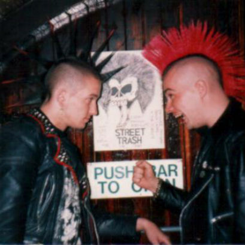
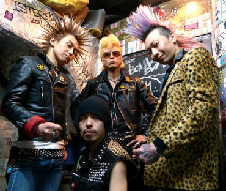
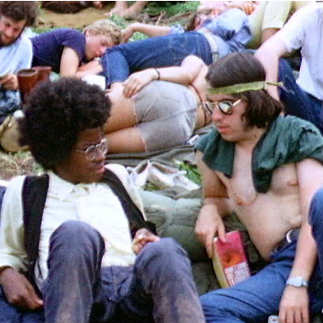
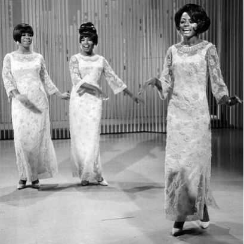
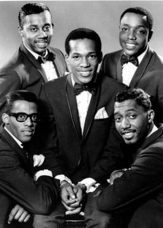
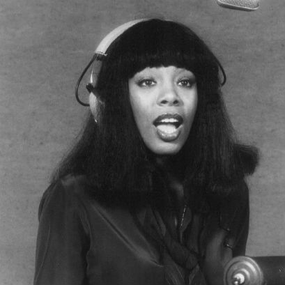
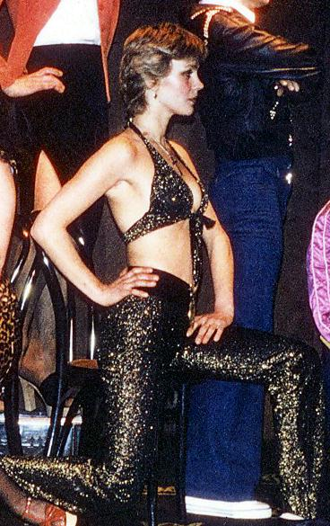

What trends did music inspire?
Punk
The Punk movement began in the 1970s in New York City, but it's influence spread quickly outward. The term was coined to name groups that were performing in Lower East Side clubs like CBGB's, including the Ramones. The scene became large in England, where it built on the earlier British trends of glam rock, rude boys and skinheads. Early punk bands, like the Sex Pistols, used their music to critize the government, tying in lyrics with social causes. Punk had it's own traditions, like 'gobbing', a way of saying performers would spit on their crowds. Punk style has been theorized as confrontation dressing, with value put on perverse things. Many items had fetish connotation, and mutilation of the body was not uncommon. Overall, punk can be seen as a pushback against conservative normalcy.
Hippies
The hippie movement, also known as the counterculture of the 1960s, began in or around college campuses and other urban centers, primarily pushed by the youth. The hippies felt middle class society was too materialistic and wanted to live in a way they thought was more authentic. For style, this meant going more unkempt, with long hair on any gender. Hippies also adopted a lifestyle that focused on avoding the restrictions of earlier society. They practiced free love, used holistic medicine and/or drugs, and many lived on communes. Eastern culture influenced the hippies. Music was a large part as well, with thousands appearing for the Woodstock Music Festival.

Motown
Motown was a record label from Detroit, Michigan that produced numerous hit groups, specializing in soul music from mainly black performers. To this day it is still one of the most successful black-owned businesses. Motown captured the growing popularity of rhythm and blues music. Motown had a house band that became famous in their own right, the Funk Brothers, which had popular and skilled musicians from the black Detroit performing circuit. The artists from Motown, which followed a similar pattern of being groups, harmonizing, and singing soul/R&B inspired songs, were hits on the Billboard charts.
Disco
Disco music appeared in the 1970s and remains a controversial chapter in music history. The movement fed into the needs and wants of dancers, which stemmed from the dance crazes like the twist in the 1960s. Music was often played in discotheques. Before disco was popular on the radio, it was played in these underground clubs and popular among black, Latino and LGBTQ+ individuals. The music was popular in clubs, and was often associated with a drug and dance culture. It eventually morphed into techno and house music.
